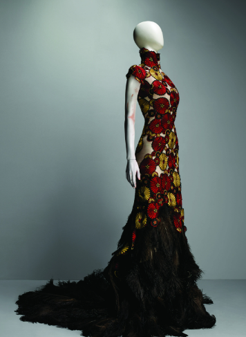

McClare (2003)
The UK Textile Industry Has A Rich History That Dates Back Centuries. The Country Was Once A Global Leader In Textile Manufacturing, And While The Industry Has Seen A Decline In Recent Years, It Is Still An Important Part Of The Economy. In This Blog Post, We Will Provide An Overview Of The Current State Of The UK Textile Market And Highlight The Top 10 Textile Companies In UK (2023). We Have Compiled A List Of Some Of The Most Innovative And Successful Companies In The Industry, Including Coats, Aos, Quantum Clothing Group, Kazareen Textile, Jimmy Choo, Damartex UK, DCK Group, Pacific Dunlop, Boden Europe And Slater Menswear. Keep Reading To Find Out More About These Companies And What Makes Them Stand Out In The Competitive World Of Textiles.
Fashion designers work in a variety of different ways when designing their pieces and accessories such as rings, bracelets, necklaces and earrings. Due to the time required to put a garment out in market, designers must anticipate changes to consumer desires. Fashion designers are responsible for creating looks for individual garments, involving shape, color, fabric, trimming, and more.[2]
|
 | |